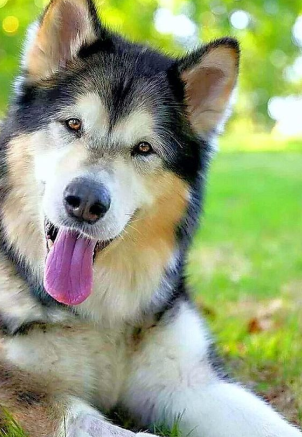
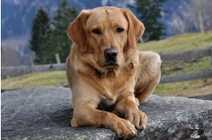
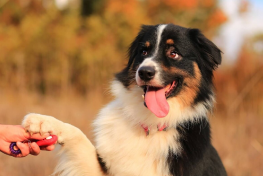
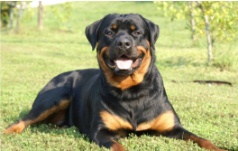
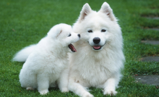

Собака - это четвероногое животное, родственники диких волков. Много-много лет назад человек приручил собаку, чтобы та защищала его, охраняла дом, скот... Соврменные люди тоже заводят собак, но не только как охранника и помощника, но и просто как друга

